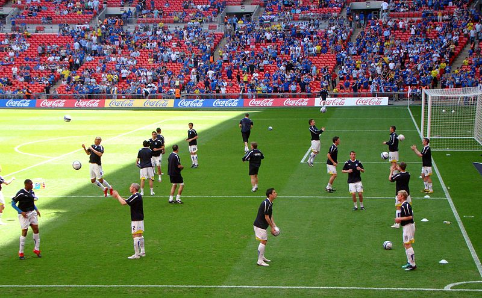

La entrada en calor es un conjunto de actividades realizadas en la parte inicial de una sesión de entrenamiento o de una clase de Educación Física cuyo fin es que el organismo pase de un estado de reposo a un estado de actividad, preparándolo así para esfuerzos posteriores.
El objetivo central consiste en incorporar al deportista o al alumno en la actividad a realizar de forma progresiva y a un nivel deseado permitiendo el aumento de la frecuencia cardíaca. Lo que favorece la circulación sanguínea, aumentando la frecuencia respiratoria y de esta forma se incrementan los niveles de oxígeno en sangre y disminuye el dióxido de carbono.
También se consigue elevar la temperatura de los músculos, y de los tendones, que las articulaciones se lubriquen permitiendo lograr movimientos más amplios y prevenir el daño articular.
La entrada en calor debe ser personal y de acuerdo al tipo de deporte o actividad física que vayamos a realizar, ya que influyen de manera directa factores como la edad, el nivel físico de cada uno, la temperatura ambiental o incluso la hora del día en que la realicemos.
El volumen del trabajo debe ser progresivo y en ningún caso debemos llevar las capacidades al extremo o llegar a la falta de oxigeno.
Además de que al realizar ejercicios específicos que preparan al cuerpo para esfuerzos más exigentes también debemos mencionar que favorece los aspectos psicológicos del deportista como ser la motivación, la concentración, así como las metas a lograr por parte de la persona. Esto se aplica en todos los ámbitos deportivos ya sea a nivel de alta competencia, amateur o recreativo/social.

Foto de Jon Candy disponible en Wikimedia Commons
.jpg){kind=link}